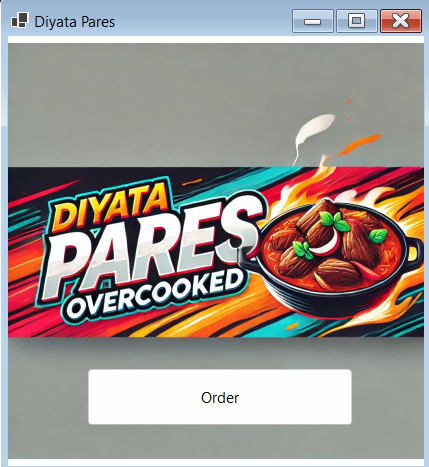
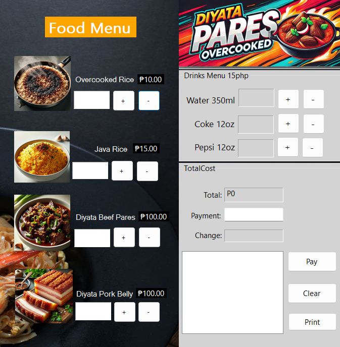

The Diyata Pares Ordering System is used by staff to manage food orders. Its interface allows staff to efficiently take and process orders, as well as handle billing.
Key Features:
Menu Form: Displays available food and drink items with quantity selection.
Order Form: Allows user to place orders and calculates total amounts automatically.
